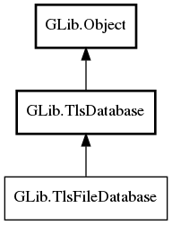

GLib.TlsFileDatabase Reference Manual
Packages
gio-2.0
GLib
TlsFileDatabase
anchors
new
TlsFileDatabase
Object Hierarchy:

Description:
public
interface
TlsFileDatabase
:
TlsDatabase
Namespace:
GLib
Package:
gio-2.0
Content:
Properties:
public
abstract
string
anchors
{
construct
set
;
owned
get
; }
Static methods:
public
static
TlsFileDatabase
?
new
(
string
anchors)
throws
Error